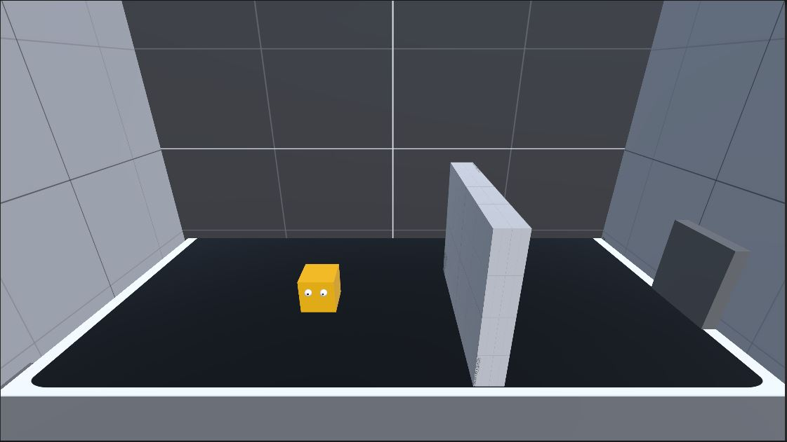
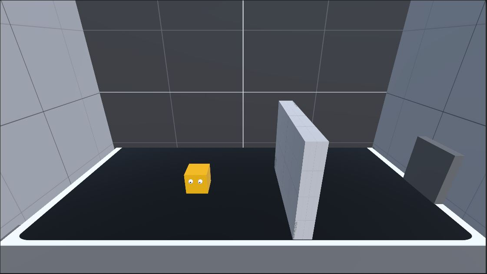

🕹️ Game Projects Showcase
Pushback Technologies, Pune
Projects developed during my tenure as a Game Developer at Pushback Technologies.
🮠Dus Ka Dum
An educational quiz game where players must answer 10 questions correctly to win. Built with dynamic question logic and interactive design to make learning fun.


🮠Fall Game
A tilt-control survival game where players tilt their device to dodge falling obstacles. Fast-paced reflex gameplay built in Unity.


🮠Fat Man Survive
A funny survival game where a pizza-loving character must survive through obstacles while fighting his cravings!


🮠Finger Furry
A swipe-based arcade game where players guide a furry ball home through dangerous paths and moving traps.


HomeseekerS-Gamein
Projects developed at HomeseekerS-Gamein using Unity Engine and AR frameworks.
🧩 AA Color Hit
A ragdoll physics challenge where players hit the middle target to save both characters hanging on opposite sides!


🉠AR Dragon Experience
Augmented Reality project where scanning a dragon image brings a 3D dragon to life, interacting with the user’s surroundings.


🧠Dus Ka Dum — Quiz Game
A knowledge-based quiz inspired by TV game shows where players aim to win ₹10 Crore by answering all 10 questions correctly.


🨠Memorise (Switch Color)
A memory-reflex puzzle where players switch and recall colors in two phases of play. Tests observation and timing.
/1.JPG)
/2.JPG)
/3.JPG)
Zero-Metrix
3D arcade-style projects built with Unity focusing on smooth physics and gameplay dynamics.
🌀 Hit 3D
A 3D action arcade game inspired by Helix Jump where players break through spinning rings with precision and timing.

🚗 Neo Drive
A futuristic rhythm-based driving game set on neon-lit tracks that synchronize with background music.


🚀 Rocketman
A rocket-powered adventure where players fly through levels, avoid obstacles, and collect energy coins for upgrades.


AI Odyssey — IIT Patna M.Tech Final Project
AI Odyssey: Adaptive Intelligence through Reinforcement Learning
AI Odyssey explores how agents learn adaptive behaviors in Unity environments using Deep Reinforcement Learning (DRL). It uses Unity ML-Agents to teach agents tasks like navigation, puzzle-solving, and motion control through feedback and reward learning. This project forms the foundation for next-gen adaptive AI systems in games, robotics, and simulations.
 
